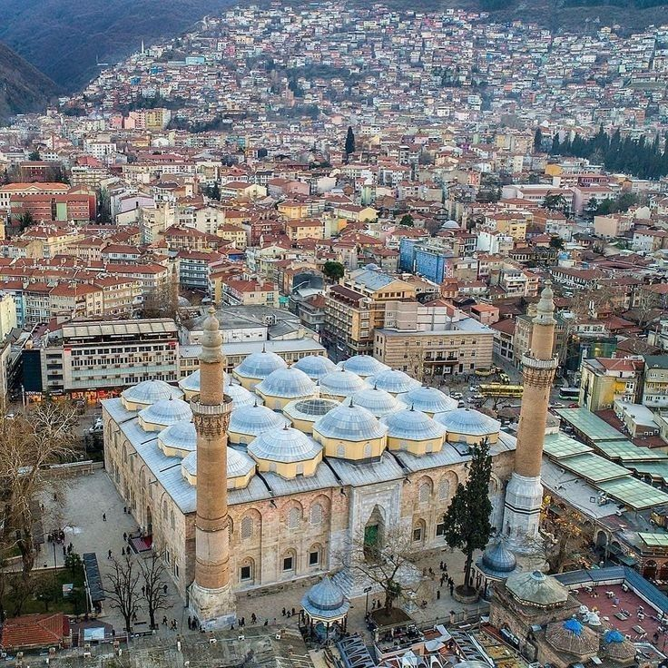
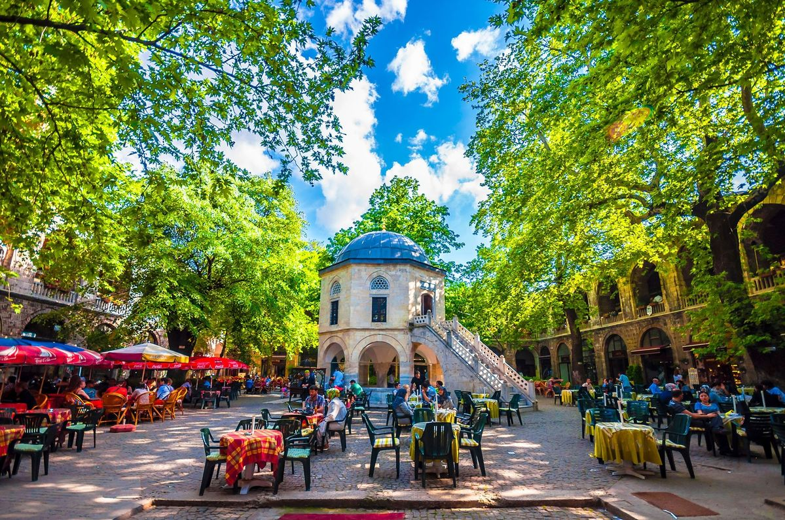
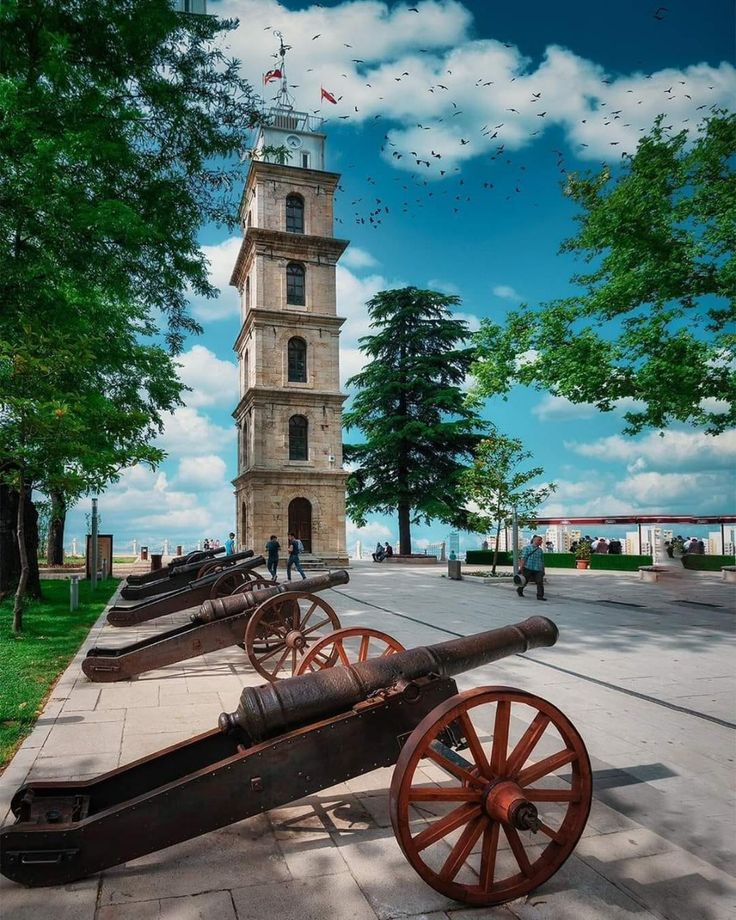
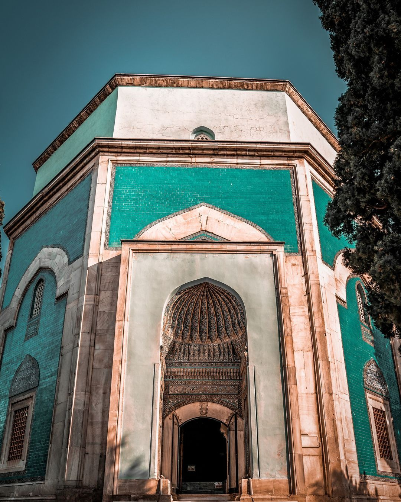
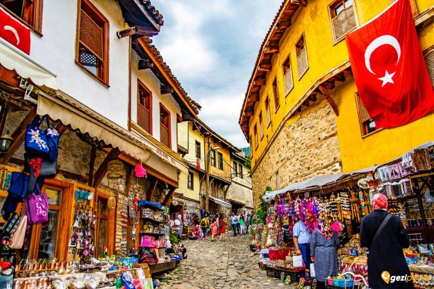
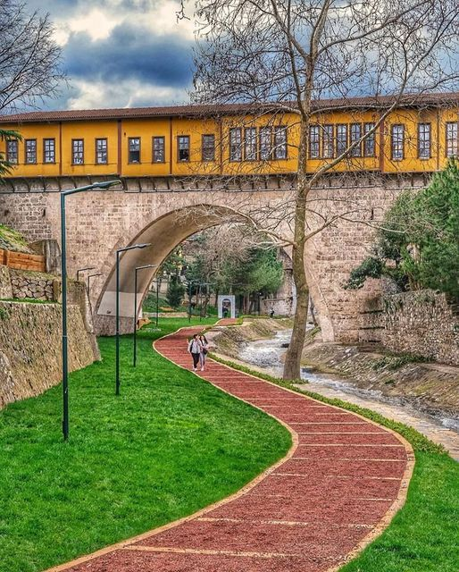
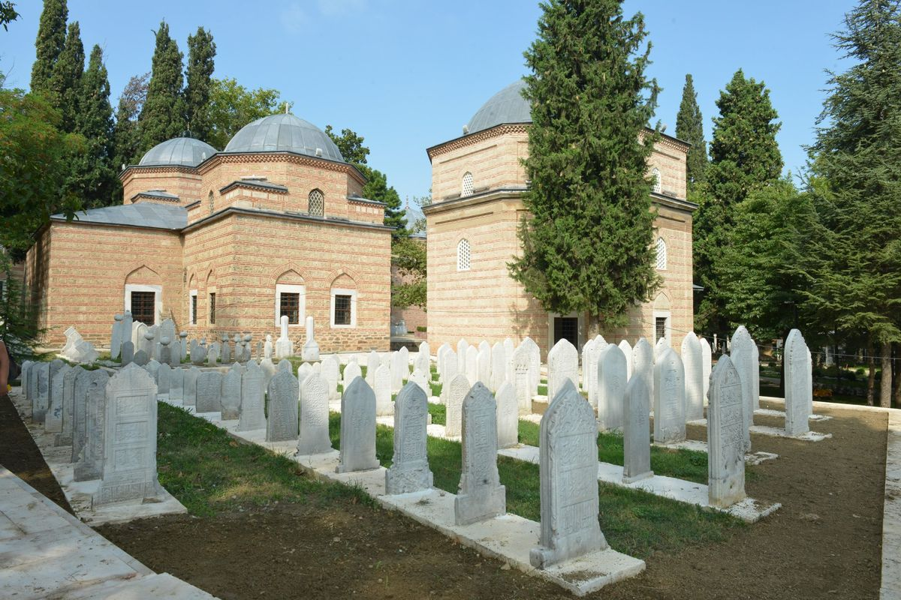
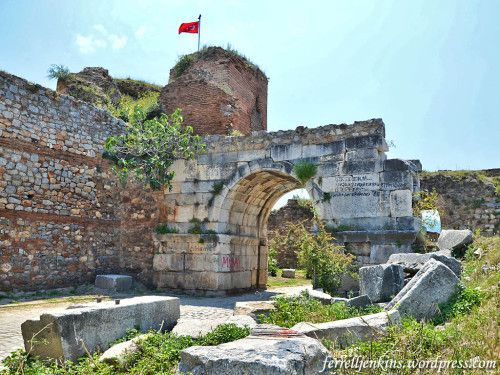
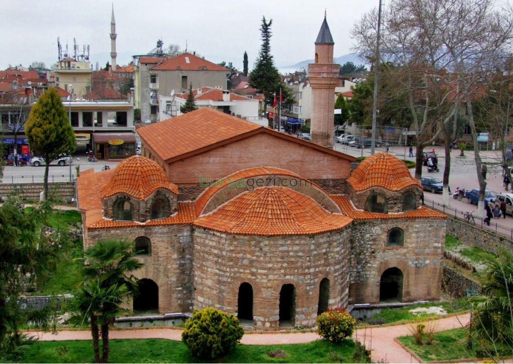

Ulu Cami
Şehrin kalbi, 20 kubbeli Osmanlı mimarisinin zirvesi.
Osmanlı'nın Başkenti · Yeşil Şehir · Tarihin Kalbi
Bursa, Osmanlı’nın ilk başkenti olarak camilerden hanlara, köprülerden türbelere uzanan eşsiz bir tarihi peyzaj sunar. Aşağıda öne çıkan duraklar, madde madde ve görsellerle özetlenmiştir.

Şehrin kalbi, 20 kubbeli Osmanlı mimarisinin zirvesi.

Koza Han (ipekçilik), Pirinç Han, Fidan Han ve tarihi Kapalıçarşı.

Osman Gazi ve Orhan Gazi türbeleri ile tarihi Saat Kulesi.

Yeşil Camii ve kentin sembolü olan turkuaz çinili Yeşil Türbe.

700 yıllık dokusunu koruyan, UNESCO listesindeki Osmanlı köyü.

Dünyadaki çarşılı dört köprüden biri.

“Bursa’nın Topkapı’sı” olarak bilinen türbeler ve bahçeler topluluğu.

Hristiyanlık ve İslam tarihi için kritik öneme sahip antik yapılar.

Farklı dönem katmanlarını taşıyan, İznik’in kültür rotasının vazgeçilmez durağı.